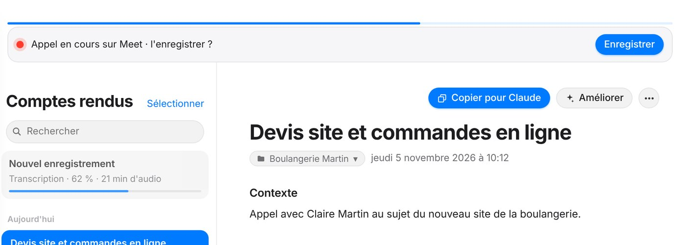
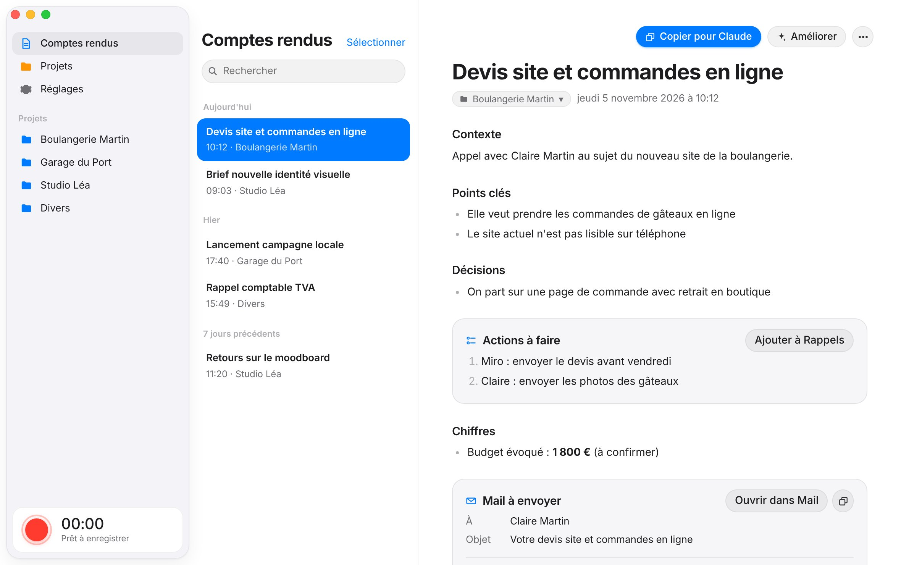
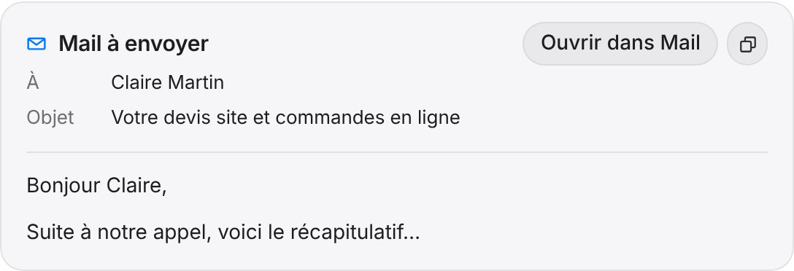
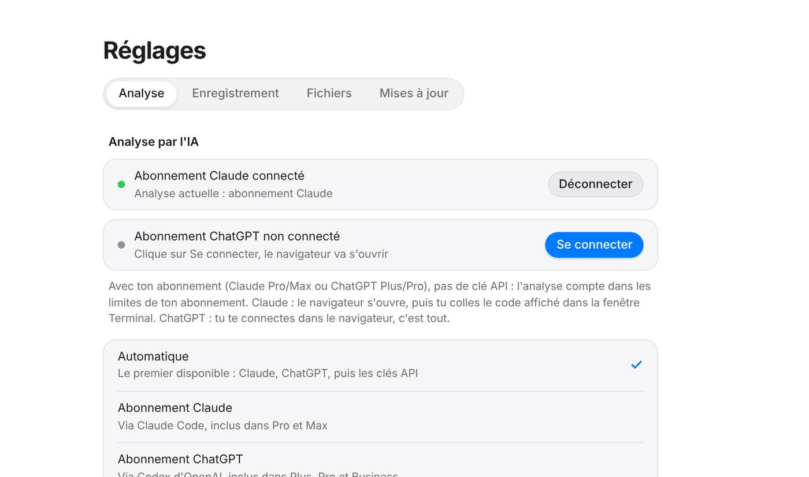

Il voit l'appel commencer.
Quand Meet, Zoom ou Teams utilise ton micro, MiroRecap te propose d'enregistrer. Tu suis ensuite la transcription en direct.


MiroRecap enregistre tes appels sur ton Mac, les transcrit sans rien envoyer, et rédige un compte rendu clair, rangé par client, avec le mail de suivi prêt à partir.

Fonctionne avec Google Meet · Zoom · Teams · FaceTime · WhatsApp · le Dictaphone de l'iPhone
Comment ça marche
Un clic dans la barre des menus. En visio, MiroRecap repère l'appel et te propose de l'enregistrer.
Whisper tourne sur la puce de ton Mac. Ta voix et celle de tes interlocuteurs, sans internet.
Claude ou ChatGPT tire les décisions, les actions, les chiffres et le mail à envoyer.
Le compte rendu arrive dans le bon projet. Une notification te prévient.
Fonctionnalités
Pensé pour les indépendants et les petites équipes qui enchaînent les appels clients.
Quand Meet, Zoom ou Teams utilise ton micro, MiroRecap te propose d'enregistrer. Tu suis ensuite la transcription en direct.

Connecte MiroRecap à l'app Claude : il lit tes comptes rendus pour te répondre.
Qu'est-ce qu'on a dit avec la boulangerie Martin ?
Devis site + commandes en ligne, 1 800 € à confirmer. Tu dois envoyer le devis avant vendredi.
Devis, récap, relance : MiroRecap rédige le mail dans ton ton, avec ta signature. Un clic l'ouvre dans Mail.

Pas de clé à acheter : l'analyse passe par ton abonnement. Et si l'un ne répond pas, l'autre prend le relais.

Ajoute tes clients et ton jargon : la transcription les reconnaît. Un raté ? « Améliorer » corrige après coup.
Les tâches de l'appel partent dans l'app Rappels, sur ton Mac et ton iPhone.
Pas de bot dans tes visios, pas de serveur à nous, rien à revendre.
Whisper tourne sur ta puce Apple. Seul le texte part chez Claude ou ChatGPT, via ton compte, pour rédiger.
Comptes rendus et audios sont dans ton iCloud Drive. Tu choisis combien de temps garder les enregistrements.
Le code est public : chacun peut vérifier ce que fait l'app.
Une fenêtre de bienvenue te guide : transcription, connexion à ton IA, test du micro.
Un Mac avec puce Apple (M1 ou plus récent) sous macOS 13.5 minimum. Les Mac Intel ne sont pas compatibles : la transcription utilise la puce Apple.
L'app est gratuite. Pour rédiger les comptes rendus, elle utilise ton abonnement Claude (Pro, Max) ou ChatGPT (Plus, Pro, Business), ou une clé API facturée à l'usage.
MiroRecap enregistre ton micro et le son qui sort de ton Mac, puis mélange les deux. macOS te demande l'autorisation une fois. Avec un casque, le son est encore plus propre.
Oui. Enregistre avec le Dictaphone puis partage le fichier dans iCloud Drive → Comptes-rendus → _A-traiter. Ton Mac s'en occupe dès qu'il est allumé.
MiroRecap est une app indépendante, pas encore signée par Apple. macOS demande donc de confirmer une fois, dans Réglages Système → Confidentialité et sécurité.
En France, enregistrer quelqu'un sans le prévenir est interdit. Préviens toujours ton interlocuteur avant de lancer l'enregistrement.